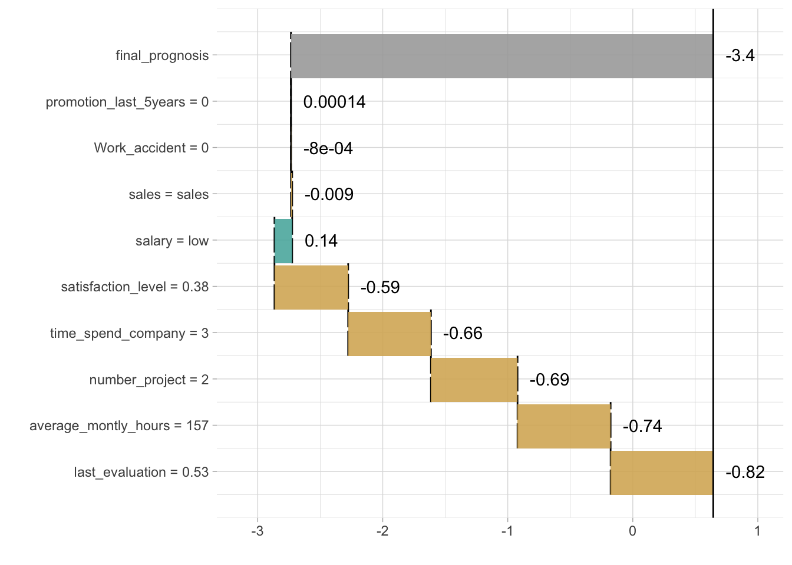
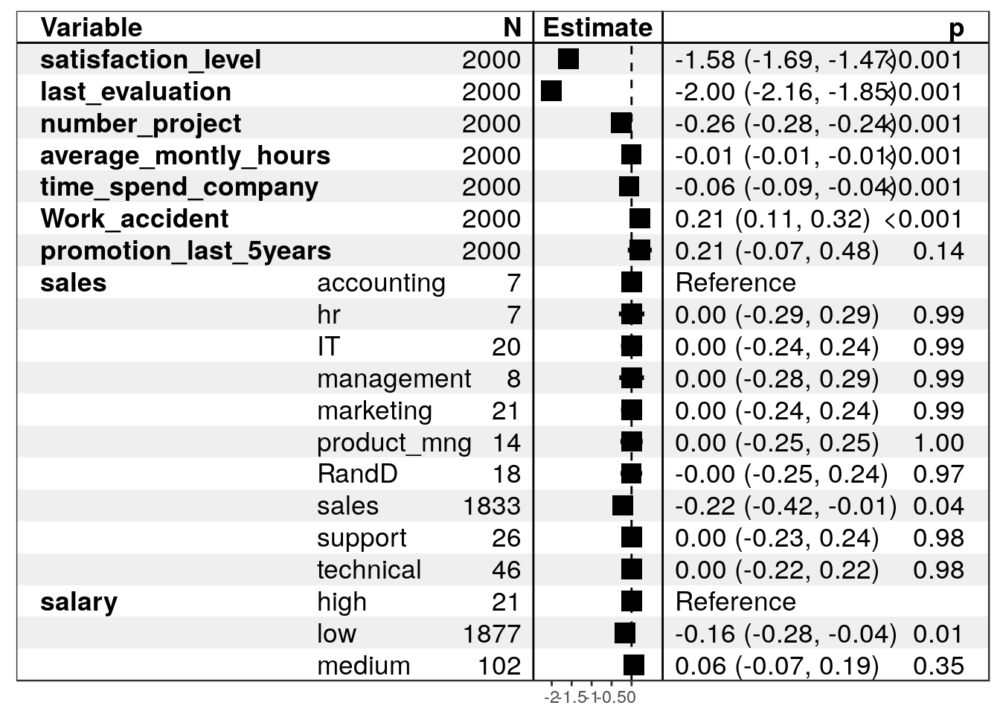

library(live)
library(breakDown)
library(randomForest)
head(HR_data)## satisfaction_level last_evaluation number_project average_montly_hours
## 1 0.38 0.53 2 157
## 2 0.80 0.86 5 262
## 3 0.11 0.88 7 272
## 4 0.72 0.87 5 223
## 5 0.37 0.52 2 159
## 6 0.41 0.50 2 153
## time_spend_company Work_accident left promotion_last_5years sales salary
## 1 3 0 1 0 sales low
## 2 6 0 1 0 sales medium
## 3 4 0 1 0 sales medium
## 4 5 0 1 0 sales low
## 5 3 0 1 0 sales low
## 6 3 0 1 0 sales lowHR_data$left <- as.numeric(HR_data$left)
trees <- randomForest(left~., data = HR_data, ntree=1000)
similar <- sample_locally(data = HR_data,
explained_instance = HR_data[2,],
explained_var = "left",
size = 2000)
head(similar$data)## satisfaction_level last_evaluation number_project average_montly_hours
## 1 0.85 0.86 5 262
## 2 0.80 0.51 5 262
## 3 0.80 0.86 2 262
## 4 0.80 0.86 5 189
## 5 0.80 0.86 5 262
## 6 0.80 0.86 5 262
## time_spend_company Work_accident promotion_last_5years sales salary
## 1 6 0 0 sales medium
## 2 6 0 0 sales medium
## 3 6 0 0 sales medium
## 4 6 0 0 sales medium
## 5 2 0 0 sales medium
## 6 6 0 0 sales mediumsimilar <- add_predictions(HR_Data, similar, black_box_model = trees)
head(similar$data)## satisfaction_level last_evaluation number_project average_montly_hours
## 1 0.85 0.86 5 262
## 2 0.80 0.51 5 262
## 3 0.80 0.86 2 262
## 4 0.80 0.86 5 189
## 5 0.80 0.86 5 262
## 6 0.80 0.86 5 262
## time_spend_company Work_accident promotion_last_5years sales salary
## 1 6 0 0 sales medium
## 2 6 0 0 sales medium
## 3 6 0 0 sales medium
## 4 6 0 0 sales medium
## 5 2 0 0 sales medium
## 6 6 0 0 sales medium
## left
## 1 0.96808467
## 2 0.03214039
## 3 0.07656249
## 4 0.03929444
## 5 0.02242086
## 6 0.98827646trained <- fit_explanation(live_object = similar,
white_box = "regr.lm",
selection = FALSE)
# trained
plot_explanation(trained, "waterfallplot",
explained_instance = HR_data[1,])
plot_explanation(trained, "forestplot",
explained_instance = HR_data[1,])